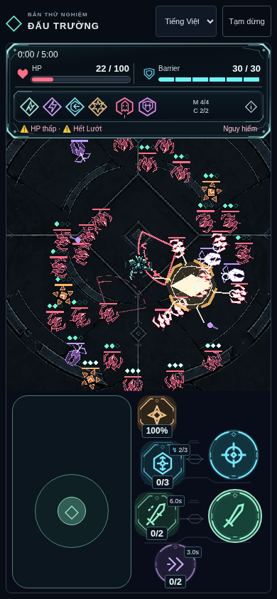

Reference chính: Q7A Visual Hierarchy / Contrast Study V1. P0 Player/threat → P1 vai trò địch → P2 dấu/field → P3 sàn. Các mục concept01–06 là composition/archive; mục Runtime hiện hành có screenshot renderer thật sau tích hợp.
01 / Silhouette · cùng tỷ lệ world
Trên đây phóng 2×: Player40 / Grunt36 / Archer38 / Volatile36 / Bulwark50 / Boss76 world px chiều cao artwork. Collider vẫn16/14/22/32. Đây là kích thước đề xuất để duyệt, không đổi camera/hitbox.
02 / Bảy trạng thái · mỗi nhân vật một source sheet riêng
Idle · Move · Windup · Attack · Recovery · Hit · Death. Pose keys, chưa phải animation atlas hoàn chỉnh; ô/pivot chưa đều. Attack sample là một pose minh họa, không đại diện mọi frame. Volatile cột Recovery = aftermath N/A với actor sống; Boss hit không gây stagger.
03 / Arena Q7A · kích thước gameplay thật
Mobile390×844: canvas372×356, zoom0.775 theo code Q7B; mobile320×740: canvas302×252, zoom0.75. Desktop1440×900: canvas1374×542, zoom0.85875. Ảnh stage32enemy cố định để đọc silhouette (crowd stress study), không natural run, không đổi cap/spawn. Ảnh không có HUD là vùng arena; HUD accepted tham chiếu ở baseline bên dưới.
04 / Chain Warden · ba đòn hiện có
Sweep: chain vung ngang · Ring: arms mở từ ngực, đạn12ray+fan3 vẫn do VFX hiện có · Slam: overhead rồi giáng xuống vị trí đã khóa. Pose art không thêm threat/hitbox/timing.
05 / Player · nhóm action hiện có
L1 / L2 / L3 / Heavy / Basic / Charged / Dash / Dash exit. Mint thuộc player; amber chỉ nhấn heavy/charged. VFX slash/muzzle/ghost vẫn riêng.
06 / Before thật ↔ After concept

BEFORE — runtime5ee970e, renderer fixture thật. Không phải cùng vị trí với staged composition.AFTER CONCEPT — sprite sources mới trên floor thật. Chưa tích hợp, không chứng minh animation/performance hoặc input.Giới hạn cần xử lý sau khi duyệt hướng visual
V1 có khoảng trống lớn, edge/alpha residue, weapon/effect overlap giữa vài pose và pivot không đều. Archer có arrow bake trong poseattack; Bulwark có cyan impact bake; player/Grunt có chút weapon trail. Trước runtime cần source sạch riêng, bỏ baked VFX, đăng ký pivot và direction theo aim; không dùng auto-crop7ô này làm atlas production. Grayscale/still chưa chứng minh motion readability, performance hay thiết bị thật. Volatile không có recovery sống; death không kéo dài tồn tại gameplay. Không tạo content/gameplay mới.
Phản hồi cần: silhouette/palette6nhân vật; Boss có khác Elite và ba poseattack có phân biệt; Player/threat có nổi ở mobile/crowd/grayscale. Có thể duyệt hướng art kèm điểm sửa. Dừng tại visual gate trước tích hợp.